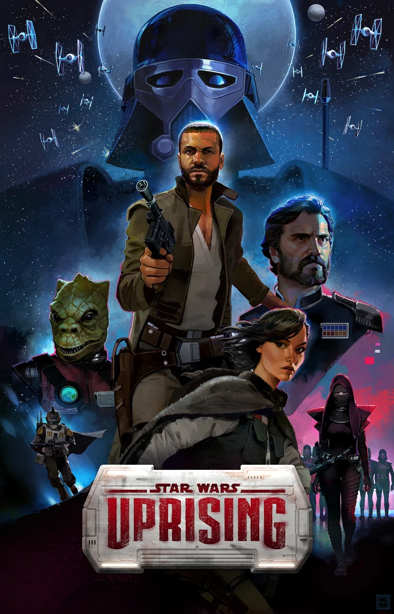
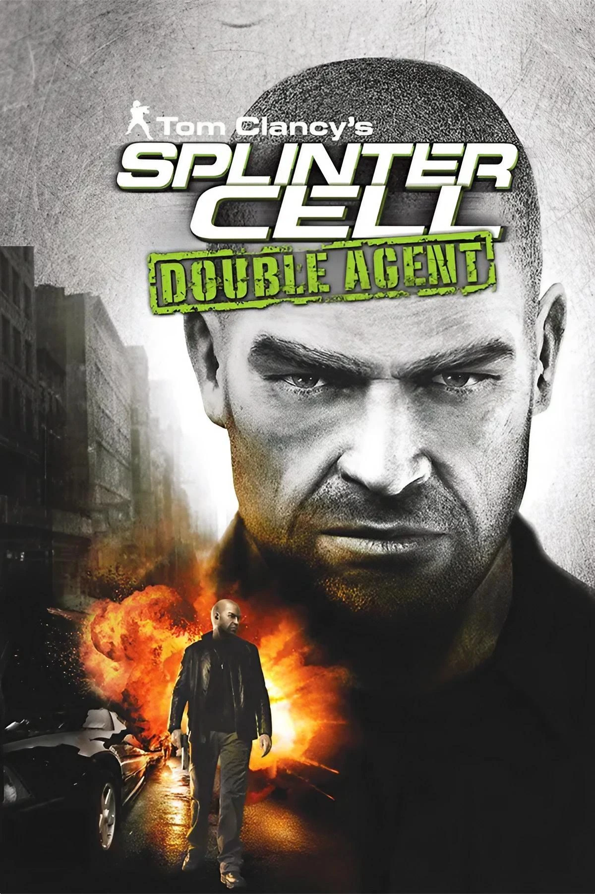
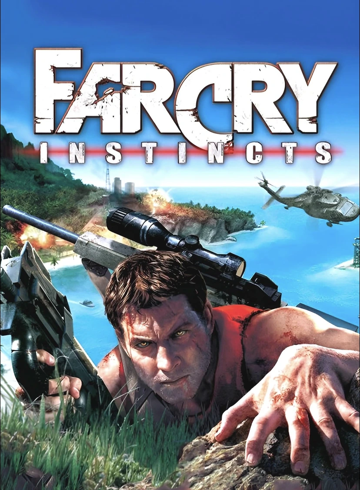

Welcome to my
Game development portfolio.
Hi, I'm a veteran game developer with over 25 years of experience building levels, crafting missions, elaborating quests, staging cinematics and writing stories.
Featured work

BioShock 2 / Minerva's Den2010
Level design · Cinematic scripting

Tomb Raider: Underworld + DLC2008–09
Cinematics · Camera tools

Weird West2022
Quest design · Writing · Encounter Scripting
Additional credits

Immortals of Aveum
Level and Mission Design · 2023

Star Wars: Squadrons
Mission Design · 2020

Star Wars Battlefront II
Mission Design and Scripted Events · 2017

Star Wars: Uprising
Level Design · 2015

The Bureau: XCOM Declassified
Level and Mission Design · 2013

Splinter Cell: Double Agent
Level Design and Cinematics · 2006

Far Cry Instincts
Level Art and Level design · 2005
Early career credits
A little background
Designer by trade,
storyteller at heart.
I began my game development career as an artist in Montreal in 1998, then moved into game design in 2004. Since then, I've worked across level and mission design, quests, narrative design, cinematics and writing. My career has been split between Montreal and Northern California where I spent nearly 9 years. I am currently back in the Montreal area but have been working remotely for US based studios for the last few years.
During my time in California I took part in UCLA Extension's Feature Film Writing program and graduated with honors. One of my short screenplays titled Trunk won me the first place in an online screenwriting competition, as well as placing top 3 in several others.
I had my first opportunity to contribute writing to a game with Weird West and am definitely interested in doing more. My favorite games tend to be the ones where gameplay and narrative are closely linked, and this synergy between gameplay and story is what I'm most interested in as a developer as well.
Open to new opportunities
Available for full-time, contract, and freelance roles, including remote positions open to Canada-based applicants.